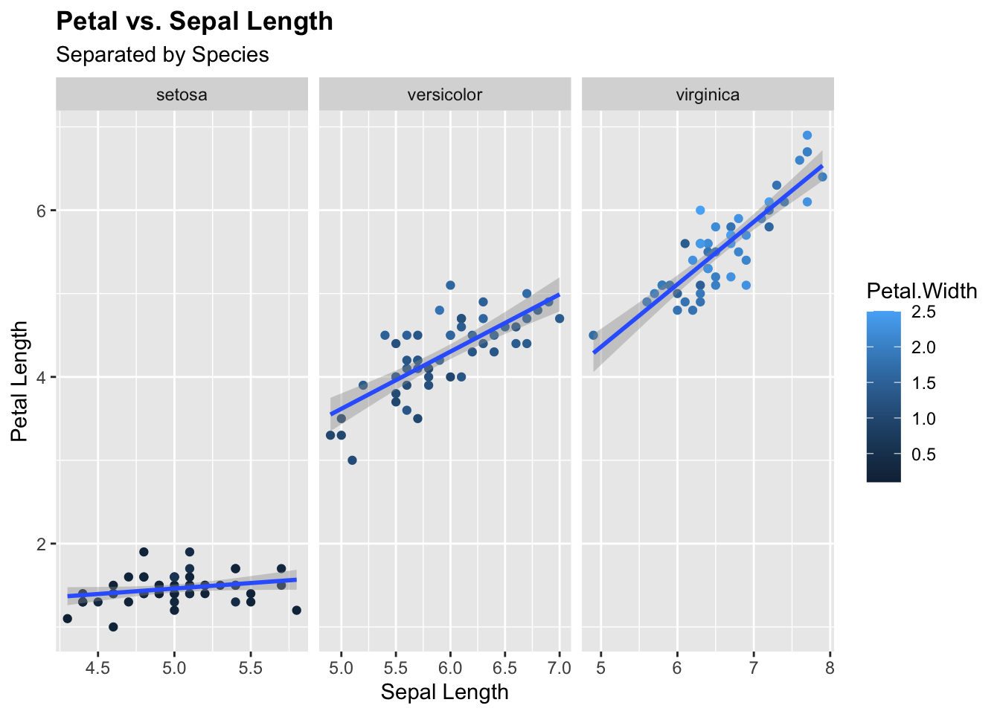

ls()
rm(list=ls())6 Exporting and Importing Data Formats in R
6.1 Description
This script will demonstrate methods for exporting and importing various data and plot formats from an R script. We will be using the built-in “iris” and “mtcars” datasets available in R. We encourage you to go through these steps with a dataset of your own and export formats that are relevant to your study. This session will cover commonly needed formats, including .xlsx, .csv, .pdf, .png, and .jpeg. However, there are many additional data formats that can be used and we recommend exploring these independently. Keep in mind that there are many different ways to do similar things in R, i.e. multiple packages to export to .xlsx. This script is intended to provide some helpful examples, but is not comprehensive.
6.1.1 Clear environment
6.1.2 Set output directory
dir.create("output")
dir_save <- "output/"6.1.3 Load libraries
library(tidyverse) # Needed for 'glimpse()'
library(openxlsx) # Needed to export data.frame to .xlsx
library(dplyr) # Needed to convert rownames to column and simultaneously delete rownames
library(rio) # Needed for 'import' function
library(readxl) # Needed for alternative method for importing .xlsx6.1.4 Load datasets
We will load the built-in “iris” and “mtcars” datasets for demonstration purposes.
data("iris")
data("mtcars")6.1.5 Examine data structure
head(iris) Sepal.Length Sepal.Width Petal.Length Petal.Width Species
1 5.1 3.5 1.4 0.2 setosa
2 4.9 3.0 1.4 0.2 setosa
3 4.7 3.2 1.3 0.2 setosa
4 4.6 3.1 1.5 0.2 setosa
5 5.0 3.6 1.4 0.2 setosa
6 5.4 3.9 1.7 0.4 setosahead(mtcars) mpg cyl disp hp drat wt qsec vs am gear carb
Mazda RX4 21.0 6 160 110 3.90 2.620 16.46 0 1 4 4
Mazda RX4 Wag 21.0 6 160 110 3.90 2.875 17.02 0 1 4 4
Datsun 710 22.8 4 108 93 3.85 2.320 18.61 1 1 4 1
Hornet 4 Drive 21.4 6 258 110 3.08 3.215 19.44 1 0 3 1
Hornet Sportabout 18.7 8 360 175 3.15 3.440 17.02 0 0 3 2
Valiant 18.1 6 225 105 2.76 3.460 20.22 1 0 3 1glimpse(iris)Rows: 150
Columns: 5
$ Sepal.Length <dbl> 5.1, 4.9, 4.7, 4.6, 5.0, 5.4, 4.6, 5.0, 4.4, 4.9, 5.4, 4.…
$ Sepal.Width <dbl> 3.5, 3.0, 3.2, 3.1, 3.6, 3.9, 3.4, 3.4, 2.9, 3.1, 3.7, 3.…
$ Petal.Length <dbl> 1.4, 1.4, 1.3, 1.5, 1.4, 1.7, 1.4, 1.5, 1.4, 1.5, 1.5, 1.…
$ Petal.Width <dbl> 0.2, 0.2, 0.2, 0.2, 0.2, 0.4, 0.3, 0.2, 0.2, 0.1, 0.2, 0.…
$ Species <fct> setosa, setosa, setosa, setosa, setosa, setosa, setosa, s…glimpse(mtcars)Rows: 32
Columns: 11
$ mpg <dbl> 21.0, 21.0, 22.8, 21.4, 18.7, 18.1, 14.3, 24.4, 22.8, 19.2, 17.8,…
$ cyl <dbl> 6, 6, 4, 6, 8, 6, 8, 4, 4, 6, 6, 8, 8, 8, 8, 8, 8, 4, 4, 4, 4, 8,…
$ disp <dbl> 160.0, 160.0, 108.0, 258.0, 360.0, 225.0, 360.0, 146.7, 140.8, 16…
$ hp <dbl> 110, 110, 93, 110, 175, 105, 245, 62, 95, 123, 123, 180, 180, 180…
$ drat <dbl> 3.90, 3.90, 3.85, 3.08, 3.15, 2.76, 3.21, 3.69, 3.92, 3.92, 3.92,…
$ wt <dbl> 2.620, 2.875, 2.320, 3.215, 3.440, 3.460, 3.570, 3.190, 3.150, 3.…
$ qsec <dbl> 16.46, 17.02, 18.61, 19.44, 17.02, 20.22, 15.84, 20.00, 22.90, 18…
$ vs <dbl> 0, 0, 1, 1, 0, 1, 0, 1, 1, 1, 1, 0, 0, 0, 0, 0, 0, 1, 1, 1, 1, 0,…
$ am <dbl> 1, 1, 1, 0, 0, 0, 0, 0, 0, 0, 0, 0, 0, 0, 0, 0, 0, 1, 1, 1, 0, 0,…
$ gear <dbl> 4, 4, 4, 3, 3, 3, 3, 4, 4, 4, 4, 3, 3, 3, 3, 3, 3, 4, 4, 4, 3, 3,…
$ carb <dbl> 4, 4, 1, 1, 2, 1, 4, 2, 2, 4, 4, 3, 3, 3, 4, 4, 4, 1, 2, 1, 1, 2,…class(iris)[1] "data.frame"class(mtcars)[1] "data.frame"6.1.6 Export data to .xlsx
Here we will use dir_save to specify where we want to save our files. Alternatively, you can write out the full path to your output directory.
# To export a single data.frame to .xlsx
write.xlsx(iris, paste0(dir_save, "iris_data.xlsx"))
# To export multiple data.frames into different sheets, create a list of data.frames to be used as the object for write.xlsx
data.frames <- list('Sheet1' = iris, 'Sheet2' = mtcars)
write.xlsx(data.frames, file = paste0(dir_save, "iris_mtcars_data.xlsx"))
# Write to .xlsx including colnames and rownames for all sheets
write.xlsx(data.frames, file = paste0(dir_save, "iris_mtcars_data_colrow.xlsx"), colNames = TRUE, rowNames = TRUE)
# Alternatively, convert rownames from specific data.frames to a named column and export without rownames
mtcars <- tibble::rownames_to_column(mtcars, "Model")
data.frames <- list('Sheet1' = iris, 'Sheet2' = mtcars)
write.xlsx(data.frames, file = paste0(dir_save, "iris_mtcars_data_rownamestocol.xlsx"))6.1.7 Export data to .csv
# Let's first export iris as is and restore mtcars to its original format before exporting to .csv
write.csv(iris, file = paste0(dir_save, "iris_data.csv"))
mtcars <- column_to_rownames(mtcars, var = "Model")
write.csv(mtcars, file = paste0(dir_save, "mtcars_data.csv"))
# You'll notice that the default for write.csv is to set col.names and row.names = TRUE
write.csv(mtcars, file = paste0(dir_save, "mtcars_data_colrowfalse.csv"), col.names = FALSE, row.names = FALSE)Warning in write.csv(mtcars, file = paste0(dir_save,
"mtcars_data_colrowfalse.csv"), : attempt to set 'col.names' ignored# When using write.csv, colnames will still be written. If you want to eliminate colnames, use write.table
write.table(mtcars, file = paste0(dir_save, "mtcars_data_colfalse.csv"), col.names = FALSE, row.names = FALSE)6.1.8 Import data from .xlsx
# Import a data.frame from a specific sheet in a .xlsx file
df.iris.xlsx <- read.xlsx(xlsxFile = "output/iris_mtcars_data_colrow.xlsx",
sheet = 1,
rowNames = TRUE)
class(df.iris.xlsx)[1] "data.frame"head(df.iris.xlsx) Sepal.Length Sepal.Width Petal.Length Petal.Width Species
1 5.1 3.5 1.4 0.2 setosa
2 4.9 3.0 1.4 0.2 setosa
3 4.7 3.2 1.3 0.2 setosa
4 4.6 3.1 1.5 0.2 setosa
5 5.0 3.6 1.4 0.2 setosa
6 5.4 3.9 1.7 0.4 setosa# A common alternative method relies on the 'readxl' package, but functions differently
df.mtcars.xlsx <- read_xlsx("output/iris_mtcars_data_colrow.xlsx",
sheet = 2)New names:
• `` -> `...1`class(df.mtcars.xlsx)[1] "tbl_df" "tbl" "data.frame"head(df.mtcars.xlsx)# A tibble: 6 × 12
...1 mpg cyl disp hp drat wt qsec vs am gear carb
<chr> <dbl> <dbl> <dbl> <dbl> <dbl> <dbl> <dbl> <dbl> <dbl> <dbl> <dbl>
1 Mazda RX4 21 6 160 110 3.9 2.62 16.5 0 1 4 4
2 Mazda RX4 W… 21 6 160 110 3.9 2.88 17.0 0 1 4 4
3 Datsun 710 22.8 4 108 93 3.85 2.32 18.6 1 1 4 1
4 Hornet 4 Dr… 21.4 6 258 110 3.08 3.22 19.4 1 0 3 1
5 Hornet Spor… 18.7 8 360 175 3.15 3.44 17.0 0 0 3 2
6 Valiant 18.1 6 225 105 2.76 3.46 20.2 1 0 3 1# Using this method, you will need to convert to a data.frame before you can set rownames
df.mtcars.xlsx <- as.data.frame(df.mtcars.xlsx)
rownames(df.mtcars.xlsx) <- df.mtcars.xlsx[[1]]
df.mtcars.xlsx <- df.mtcars.xlsx[-1]
head(df.mtcars.xlsx) mpg cyl disp hp drat wt qsec vs am gear carb
Mazda RX4 21.0 6 160 110 3.90 2.620 16.46 0 1 4 4
Mazda RX4 Wag 21.0 6 160 110 3.90 2.875 17.02 0 1 4 4
Datsun 710 22.8 4 108 93 3.85 2.320 18.61 1 1 4 1
Hornet 4 Drive 21.4 6 258 110 3.08 3.215 19.44 1 0 3 1
Hornet Sportabout 18.7 8 360 175 3.15 3.440 17.02 0 0 3 2
Valiant 18.1 6 225 105 2.76 3.460 20.22 1 0 3 16.1.9 Import data from .csv
# Import the iris data.frame as is. Below are two alternative methods.
df.iris.csv <- read.csv("output/iris_data.csv")
df.iris.csv <- import("output/iris_data.csv")
# Import and set colnames
df.iris.csv <- read.table("output/iris_data.csv", row.names = 1, header = TRUE, sep = ",")
head(df.iris.csv) Sepal.Length Sepal.Width Petal.Length Petal.Width Species
1 5.1 3.5 1.4 0.2 setosa
2 4.9 3.0 1.4 0.2 setosa
3 4.7 3.2 1.3 0.2 setosa
4 4.6 3.1 1.5 0.2 setosa
5 5.0 3.6 1.4 0.2 setosa
6 5.4 3.9 1.7 0.4 setosadf.mtcars.csv <- read.table("output/mtcars_data.csv", row.names = 1, header = TRUE, sep = ",")
head(df.mtcars.csv) mpg cyl disp hp drat wt qsec vs am gear carb
Mazda RX4 21.0 6 160 110 3.90 2.620 16.46 0 1 4 4
Mazda RX4 Wag 21.0 6 160 110 3.90 2.875 17.02 0 1 4 4
Datsun 710 22.8 4 108 93 3.85 2.320 18.61 1 1 4 1
Hornet 4 Drive 21.4 6 258 110 3.08 3.215 19.44 1 0 3 1
Hornet Sportabout 18.7 8 360 175 3.15 3.440 17.02 0 0 3 2
Valiant 18.1 6 225 105 2.76 3.460 20.22 1 0 3 16.1.10 Plot data and export
# Create a plot and save using ggplot followed by ggsave
ggplot(data = df.iris.csv,
mapping = aes(x = Sepal.Length, y = Petal.Length)) +
geom_point(aes(color = Petal.Width)) +
geom_smooth(method="lm") +
labs(title = "Petal vs. Sepal Length", subtitle = "Separated by Species", x = "Sepal Length", y = "Petal Length") +
facet_wrap(~Species,
scales = "free_x") +
theme(plot.title = element_text(face = "bold"))
ggsave("output/iris_ggplot.pdf", width = 7, height = 7)
ggsave("output/iris_ggplot.png", width = 7, height = 7)
ggsave("output/iris_ggplot.jpeg", width = 7, height = 7)
# Alternatively, assign the plot to an object, then print and dev.off. Whereas the first method is compatible with plots made using ggplot, this method will work for any type of plot.
plot <- ggplot(data = df.iris.csv,
mapping = aes(x = Sepal.Length, y = Petal.Length)) +
geom_point(aes(color = Petal.Width)) +
geom_smooth(method="lm") +
labs(title = "Petal vs. Sepal Length", subtitle = "Separated by Species", x = "Sepal Length", y = "Petal Length") +
facet_wrap(~Species,
scales = "free_x") +
theme(plot.title = element_text(face = "bold"))
pdf("output/iris_plot.pdf", width = 7, height = 7)
print(plot)
invisible(capture.output(dev.off()))
png(filename = "output/iris_plot.png", width = 1500, height = 1500, res = 300)
print(plot)
invisible(capture.output(dev.off()))
jpeg("output/iris_plot.jpeg", width = 1500, height = 1500, res = 300)
print(plot)
invisible(capture.output(dev.off()))6.1.11 Save what has been done to an .Rdata file
In some cases, it may be helpful to save a specific object or everything in your environment to an .Rdata file that can be imported all at once to be used in a different pipeline or at a later time. You can save as either an RData object or as an RDS object.
# To save a specific object
save(df.iris.csv, file = paste0(dir_save, "df.iris.csv.RData"))
# To save all data and values in your R environment to an RData file
save.image(paste0(dir_save, "Data_Export_Tutorial.RData"))You can then load that .RData file back into R and start back up where you left off.
# First clear the environment so we can see how RData files are loaded
ls()
rm(list=ls())
# Now load your .RData objects
load("output/Data_Export_Tutorial.RData")You can do the same thing for single objects saved as .RDS
saveRDS(df.iris.csv, file = paste0(dir_save, "df.iris.csv.rds"))
ls()
rm(list=ls())
# Now load your .RDS objects
reloaded_data <- readRDS("output/df.iris.csv.rds")There is a workaround to save and reload an entire environment as .RDS, but it is a bit more involved and requires the use of loops, which is beyond the scope of this session. We will cover loops in a later session.
6.2 Homework
For this homework assignment, you will be using a script that you write yourself! If you have data for your own study, we suggest writing a simple script that is relevant to the analyses you will need to do. The only requirements are that you should use data that can be imported / exported in a table or dataframe format and plotted. If you do not have data of your own yet, you can use a built in dataset available from R. To find built in datasets use the following command:
data()
Now perform the following steps:
- Clear your environment.
- Set your working directory. This should be in a location where you perform work related to this course.
- Set output directory. This should be a subdirectory within your working directory where you want to save any files that you generate. You can create this manually in your normal file finder or create it using R as is done in the script above.
- Load libraries that are necessary for your script.
- Load your dataset. Either import your own data or load one of the built in datasets.
- Examine data structure.
- Plot your data however you like! Refer to previous sessions for ideas and guidance.
- Save your plots as pdf, png, and jpeg.
- Export your data file as .xlsx and .csv. Confirm that your row and colnames are in the correct position.
- Save a relevant object from your environment as .Rdata and .rds.
- Load your .Rdata and .rds files back into R.
- Consult the internet or ChatGPT and find at least one alternative method to import, export, and save your data or plots. Try these out.
- Save your script.